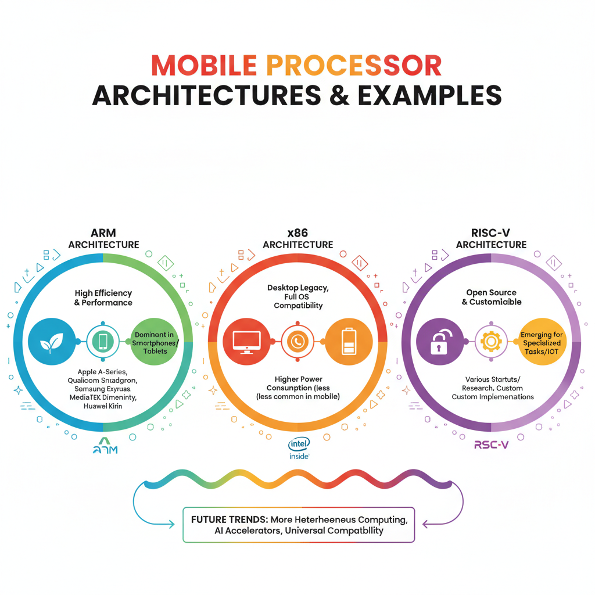

All Available Processors for Mobiles
Overview of Mobile Processors

Diagram showing the different types of mobile processors available in the market.
The mobile processor landscape has undergone significant changes in recent years, with various manufacturers vying for market share. As of now, the top processor manufacturers for mobiles include Qualcomm, Samsung, and Apple.
Types of Mobile Processors
Mobile processors primarily come in two types: ARM-based processors and x86-based processors. ARM-based processors are widely used in budget-friendly smartphones due to their power efficiency and lower costs. On the other hand, x86-based processors are typically found in high-end devices, offering better performance and compatibility with existing software.
Recent Developments
Recent market trends suggest that MediaTek is expected to remain the global leader in smartphone chipset shipments for 2026 (1). However, the smartphone market is anticipated to experience its sharpest decline on record in 2026, primarily due to a shortage of memory chips and other components (2 and 3). Despite this, the global smartphone market is projected to shrink by 13% in 2026 (3).
Processors from Qualcomm
Diagram showing the different types of mobile processors available in the market.
Qualcomm has been a dominant player in the mobile processor market for several years, and their offerings continue to shape the industry. Here's an overview of their current lineup:
- Adreno GPU Architecture: Qualcomm's Adreno GPU is a high-performance graphics processing unit designed specifically for mobile devices. It features a custom ARM-based architecture with multiple cores, providing fast rendering, gaming, and graphics capabilities.
- Snapdragon Series: Qualcomm's Snapdragon series includes several variants, each targeting specific market segments:
- Snapdragon 600 series: Entry-level to mid-range processors, offering balanced performance and power efficiency.
- Snapdragon 800 series: Mid-to-high-end processors, featuring improved performance, camera capabilities, and AI enhancements.
- Snapdragon 900 series: High-end processors with advanced features like 5G connectivity, improved cameras, and enhanced AI capabilities.
- Recent Updates: Qualcomm has recently announced several updates to their processors, including the Snapdragon 8 Gen 2 for Gaming, which promises even faster performance and gaming capabilities. Additionally, they've introduced new power-saving technologies, such as Quick Charge 5+, to improve battery life.
It's worth noting that despite Qualcomm's strong presence in the market, MediaTek is expected to remain the global leader in smartphone chipset shipments in 2026, according to recent reports (1). The smartphone market is also poised for a significant decline in 2026, with some estimates suggesting a 13% contraction due to the ongoing memory chip shortage (2 and 3).
Processors from Samsung
As the global smartphone market continues to shrink, Samsung's mobile processors have been a subject of interest for developers and industry analysts alike. According to recent reports, MediaTek is expected to remain the leader in global smartphone chipset shipments in 2026 (1). Despite this, Samsung continues to innovate and improve its Exynos GPU architecture.
The Exynos series from Samsung has undergone significant updates over the years. Some of the notable series include:
- Exynos 5210: Released in 2013, this processor marked a significant shift towards power efficiency.
- Exynos 990: Launched in 2020, this processor features a new 5nm manufacturing process and improved performance.
- Exynos 2100: Announced in 2022, this is the latest flagship processor from Samsung, offering enhanced performance and power efficiency.
Recent updates to Samsung's processors include improvements in AI capabilities and enhanced camera support. However, with the global smartphone market expected to shrink by 13% in 2026 due to a memory chip shortage (4), Samsung will need to adapt its strategy to remain competitive.
As developers, it's essential to stay informed about the latest developments in mobile processors and how they impact your applications. With the rise of 5G and AI-powered features, the importance of efficient and powerful processors will only continue to grow.
For more information on Samsung's Exynos series and their specifications, refer to the official documentation from Samsung (2).
Processors from Apple
Apple's mobile processors are based on the A-series architecture, which features a custom-designed GPU (Graphics Processing Unit) that provides improved performance and power efficiency compared to traditional GPUs.
The different A-series processors include:
- A14 Bionic
- A15 Bionic
- A16 Bionic
Recent updates to Apple's processors include the introduction of the 5-nanometer process technology, which has resulted in faster performance and lower power consumption. This technology is expected to continue improving with future processor releases.
It's worth noting that the smartphone market is expected to decline sharply in 2026, with some reports suggesting a 13% shrinkage in global shipments. Despite this, Apple remains one of the leading smartphone manufacturers, and their processors are likely to play a significant role in maintaining their competitive edge.
Alternative Processors
Diagram showing the different types of mobile processors available in the market.
The mobile processor landscape is becoming increasingly diverse, with alternative manufacturers like MediaTek and Huawei offering competitive alternatives to established players like Qualcomm and Apple.
Mediatek's Helio GPU architecture has been a significant player in the market, providing a balance between performance and power efficiency. The company has introduced several Helio series over the years, including:
- Helio P35: A mid-range processor designed for budget-friendly devices
- Helio G90: A high-end processor with advanced gaming capabilities
- Helio G95: An upgraded version of the G90, offering improved performance and power efficiency
Recent updates to MediaTek's processors include the introduction of 5G support and improved AI capabilities. According to a report by WCCFtech, MediaTek is expected to remain the global leader in smartphone chipset shipments in 2026 (1).
The smartphone market is also facing significant challenges in 2026, with a report by CNBC predicting the steepest decline on record (2). Additionally, a report by YouTube highlights the impact of a memory chip shortage on the global smartphone market (3).
As the smartphone market continues to evolve, alternative manufacturers like MediaTek and Huawei will play an increasingly important role in shaping the future of mobile processors.
Market Trends and Implications
The mobile processor market is experiencing significant trends that are impacting the industry's growth and future prospects. One of the major challenges facing manufacturers is the ongoing memory chip shortage, which has been affecting the production of smartphones.
- The global smartphone market is expected to decline by 13% in 2026 due to the memory chip shortage, according to a recent report (1). This decline will have significant implications for mobile processor manufacturers, who will need to adapt to changing consumer demands and preferences.
- Consumer behavior is shifting towards more affordable options, with many consumers opting for lower-end smartphones due to the rising costs of flagship devices. (2).
- The memory chip shortage has also led to increased competition among mobile processor manufacturers, with MediaTek predicted to remain the global leader in smartphone chipset shipments for 2026 (3). This increased competition is driving innovation and investment in new technologies, which will be crucial for the industry's future growth.
As the mobile processor market continues to evolve, manufacturers must navigate these trends and implications to remain competitive. With the memory chip shortage expected to persist in 2026, it remains to be seen how the industry will adapt and respond to changing consumer demands and technological advancements.